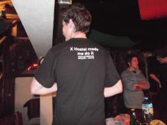
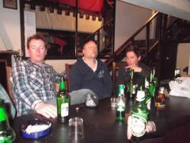
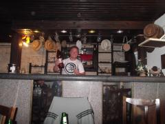
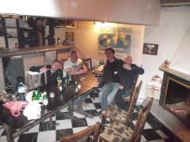
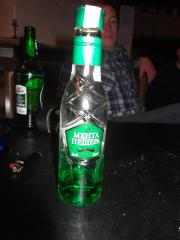
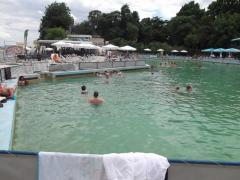

Heading to the final straight....
Following on from Jimbos blog.... We get to bed at 5am....
We get woken up by a bunch of ignorant Finnish dudes at 8am.... Very messy, very smelly, very hungover, very GRUMPY room!
Tried to get a few extra hours kip, GBudd made his formal arrival to the hostel and we made a run for the beach. The weather hasnt been what it was for the first 3 days although 30+ degree heat was starting to take it toll on Dannys sunburn and Jimbos bald patch. As we made our way to sunbathe with the locals the heavens opened and things were looking a little grim especially after a random German on a solo walking tour tried to kidnap Danny and John.
We made our way to the beach and as we set up shop the sun came back. Jimbo couldnt wait to get into the sea {also known as the JT communual urinal}, Johnny and Danny werent as keen... they were probably still tired from their 3am dip in the bar from the night before! Queue a few hours of big blows, showing the locals how to play volleyball and several bags of sandy crisps and we headed back home for a wash and then out on the tiles.
The decision was made to skip the hostels BBQ {one we would later regret} in favor of attempting to seek out some local cuisine in Varna Town away from the Brits on the piss atmosphere in Golden Sands. We made the poor call to eat at a local fish restaurant... long and short we got chips for starters, individual 1* meals walking out to us one at a time over the space of half an hour, greasy sauteed potatos for desert and this is all happening under the watchful stare of a one eyed cat. Not great.
For a Saturday night there wasnt alot of action so we headed back up to the top of town to seek out a bar with a pitstop in a sports bar full of wierd over excited Russians {note the cameo reappearance from one of their gang shortly....}. By the time we made it to the top of the strip Johnny was looking worse for wear and bowed out gracefully in traditional JT fashion.
We walked on through the town and due to thirst, the need of a bog and no other options we got beers in a local pizzeria along with 2 large Ouzos and finger spoof was away... Danny thankfully escaped the punishment he had on the previous night. After deciding that the town was shut for the night as there is a public holiday on Sunday we grabbed beers and Mint Liquer from the Turk and brought party back to the hostel.
En route to the taxi rank however about 100 mtrs in the distance we spot the crazy Russian dude running topless, with no shoes and bouncing into anything and everything. GBudd thought it was all over as he passed us and thankfully carried on his imitation of Forest Gump.... 20 mtrs up the road we found his flipflops... JT fact - Russians are wierd and not to be messed with.
Back at the hostel Johnny got up for it and joined the party where we setup in the bar and attempted to find a light switch in the pitch dark. Then from the back of the adjoining kitchen comes a creeking door followed by serious shouting and screaming in Bulgarian... Once again GBudd thought it was all over! From the darkness emerged the Hostel manager Chris - not the Bulgarian sodomisit we feared. Chris grabbed a beer and went on to tell the tale of his evening which in shorrt included his jealous newly wed wife, a missing condom and in my opinion a young American girl {not confirmed!}. Chris was in a bad way and sought sollace in the JT crowd whilst his wife stomped around the hostel slamming doors at a rate that Stevie B would have been proud of! Some Scandies and a moody Aussie joined the party and finger spoof was a hit.
We headed for bed and Shauny G found an un wanted visitor in the form of a cat in his bunk so headed up top to GBudds bunk in search of flea free dwellings {G doesnt know this so once read Shauny G can expect a moody stare no doubt!}.
Big blows this morning... Jim and G headed to the traditional baths, Johnnys reading, Shauny G slept and Danny is lost in the Jimbotour hangover woods... Were getting ready to leave this very chilled out hostel, have our final supper and head to the airport with one question on everyones lips as we go into the final furlong.....
Who will be man of the tour????
Annual questionnaire will clear that up!
First class tour... Heres to next year 2012 and beyond...
Shauny G aka 2011 web editor signing out!
OOOOOUUUUUFFFFFF!!!
Photographs


{kind=link}

{kind=link}

{kind=link}

{kind=link}

{kind=link}

{kind=link}
